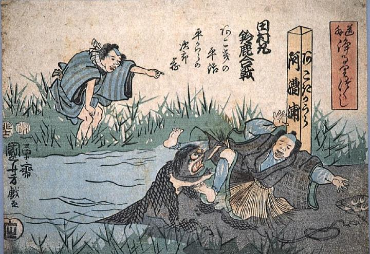

水中に男を引きずり込もうとしている河童。男は漁師で、投げた網に河童がかかったようだ。河童は浅黒く、頭には皿がある。
著作者：歌川国芳／出典：親書誌：A80_prague_0002：道外浄るりづくし 阿漕浦；ゲドウジョウルリヅクシアコギノウラ／日付：2011／資源識別子：A80_prague_0002_0001_0000
Copyright (c)2010- International Research Center for Japanese Studies, Kyoto, Japan. All rights reserved.